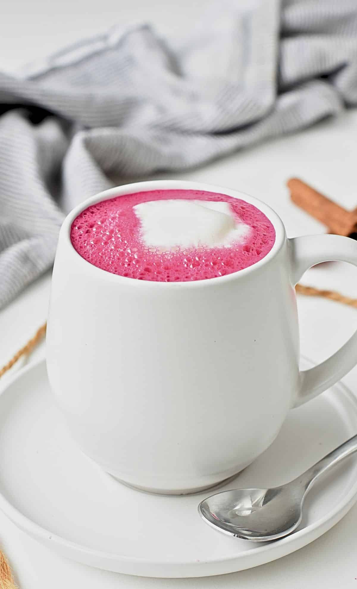

Beetroot Latte
Home

Description
This recipe is from Carine Claudepierre, a food blogger. This recipe is vegan oriented, implementing plant based milk. Beet latte is made of beet powder, which is very nutritional, including nutrients like plant based iron, potassium, and vitamins. Beet is used by many athletes to enhance cardio performance and pre race preparation
Ingredients
- Beetroot powder
- Warm water
- Maple syrup
- Vanilla extract
- Coconut milk
- Almond Milk
Steps
- Add beetpowder, warm water, maple syrup, and vanilla extract in a small saucepan
- Whisk to combine
- Add coconut milk and almond milk
- Bring pan over medium head and warm beet milk for about 2-3 minutes
- Pour beet milk into mug
- Froth remaining unsweetened almond milk
- Top mug with frothed almond milk
- Enjoy